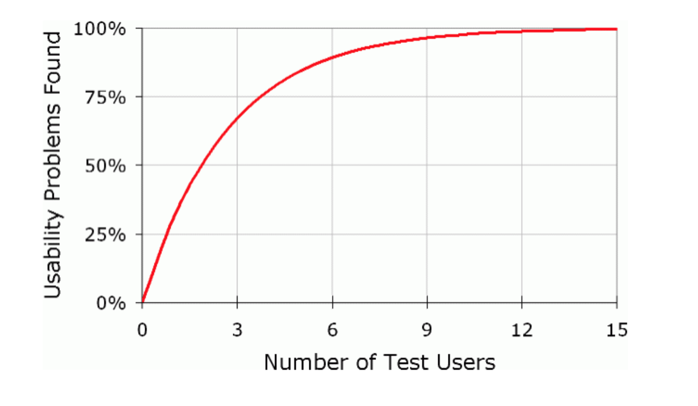
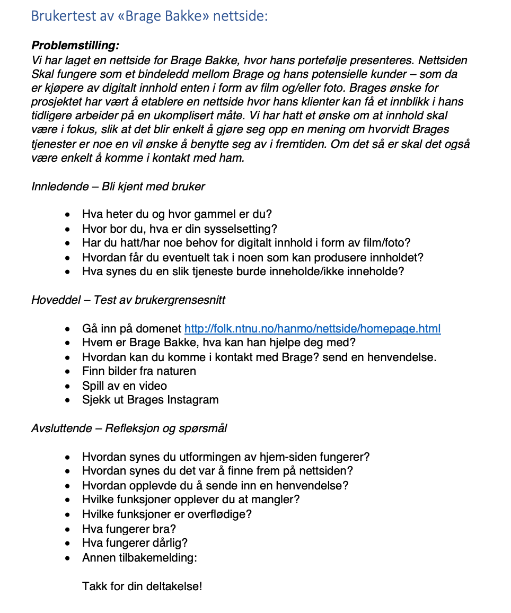

Klientens navn, navn på nettsiden og kontakperson er Brage Bakke.
I brukertestingen vår valgte vi å benytte oss av direkte intervjuer,
samt reell observasjon av brukerne. Dette har vi valgt til fordel for
et spørreskjema, da ekspertene i aller høyeste grad er enige om at
dette er en mer hensiktsmessig måte å innhente informasjon om
brukervennlighet på. Denne formen for testing vil gi en bred
forståelse av hvordan brukerne oppfatter og navigerer seg gjennom
nettsiden. Vi vil også få et innblikk i utfordringene brukerne støter
på, og muligens også hvorfor det ikke fungerer optimalt. I forkant av
brukertestingen utarbeidet vi en intervjumal, og denne benyttet vi oss
av i alle intervjuene. Brukerne gikk gjennom gitte oppgaver samtidig
som han/hun tenkte høyt ("think-aloud protocol").
Oppnåelse av brukervennlighet er gjerne knyttet til store budsjetter
og komplekse arbeidsoppgaver, og det er vanlig å tenke at
dette er knyttet til større organisasjoner som har kapasiteten til
det. Til tross for dette viser det seg i mange tilfeller at enorm og
ressurskrevende brukertesting er unødvendig. Forskning har vist at det
å teste fem personer vil være nok for å oppnå et godt resultat.
Gjennom brukertestingen vil utviklere som oss selv oppnå en bedre
innsikt i prosjektet. Uavhengig av om innsamlingen av data er stor
eller liten vil forskjellen være enorm, og ved testing av én person
vil en allerede ha dobbelt så mye data som en hadde i utgangspunktet.
Ved testing av person nummer to vil det ofte være noe overlapp mellom
testobjekt 1 og testobjekt 2. Som følge av dette vil en kunne ta med
seg den voksende kunnskapen gjennom hele testperioden. Men det vil
være viktig å huske på at folk er forskjellige og også her vil det
være ulike synsvinkler som vil gi god innsikt i prosjektet.
Testobjekt nummer 3 vil gjøre mye av det samme som de to første, men
vil også være pphavsmann til en liten men nyttig mengde data, til
tross for at innsikten ikke vil være like revolusjonerende som ved
objekt 1 og 2.
Utover i testfasen vil en se et mønster hos brukerne, og en vil ha
mindre og mindre læringsutbytte. En vil nødig sløse ressurser på å
observere tidligere sette mønstre, så den beste løsningen vil være å
ta til seg tilbakemeldinger og endre design og utforming tidlig. Det
viser seg at det allerede ved testperson 5 vil være noe sløsing av tid
og ressurser da en her ofte observerer ting en har sett før.

Figur: I illustrasjonen ser vi sammenhengen mellom antall gjennomførte brukertester,
og de oppdagede utfordringene angående brukervennlighet.
Referanse:
[https://consider.ly/blog/recruiting-user-research-participants]
Intervjuene var planlagt nøye, og spørsmålene er formulert slik at de
vil gi oss størst mulig utbytte. Innledningsvis var det ukompliserte
spørsmål for å gjøre brukeren komfortabel med situasjonen, samt enkle
spørsmål for at vi skal bli kjent. Videre beveget vi oss mot test av
grensesnitt, hvor bruker navigerte seg gjennom nettsiden samtidig som
han/hun tenkte høyt. Avslutningsvis var det mer reflekterende spørsmål
som ga oss mer inntrykk av brukers opplevelse. Vi har bevisst
unngått ja/nei-spørsmål da det er mer hensiktsmessig med åpne svar.

Vi har forsøkt å teste en mest mulig relevant brukergruppe. Vi har
testet 2 studenter (40%), 2 voksne i arbeid (40%) og 1 daglig leder i et mellomstort
selskap (20%). Alle brukertestene er gjennomført som et intervju, med
observasjon og en «think-aloud protocol». Tre av oss har vært
deltakende i intervjuene, henholdsvis som intervjuer, referent og
observatør.
I testene våre benyttet vi oss av nettleservinduet på datamaskinen (Google Chrome) i ulike vindusstørrelser. Vi ba også testobjektene navigere seg gjennom nettsiden med en annen nettleser. Da var vi innom Safari, Mozilla Firefox og Internet Explorer, som alle fungerte like bra. Det ble også testet med ulik bredde, fra 450px til 1920px. Testene ble gjennomført på et møterom i Adolf Øien-bygget uten forstyrrelser.
Som nevnt under «testdokument», var det store deler av informasjonen
som kom frem fra første testperson. Videre i testingen så vi en
avtakende trend av ny informasjon, selv om alle hadde relevante betraktninger og tilbakemeldinger.
Tidlig i testen var det få av testpersonene som hadde noen
utfordringer med å navigere seg frem på siden, de fleste benyttet seg
øyeblikkelig av navbaren for å finne «about»-siden. Én av
testpersonene fant det forvirrende med teksten på hjem-siden da han
antok at denne skulle presentere Brage, og leste da denne før han fikk
øye på «about»-fanen. Samtlige testpersoner syntes også
introduksjonsvideoen av Brage ga et mer personlig preg, etter at de
fant ut av at de kunne klikke på bildet. Svært få forsto dette med en
gang.
Ingen av testpersonene hadde noen utfordringer med å finne ut hvordan
de skulle komme i kontakt med eller å sende inn en henvendelse til
Brage.
Videre i testen observerte vi en gjennomgående utfordring for alle
testpersoner, og dette angikk «exit» av slideshowet med bilder. For å
komme seg ut av slideshowet var en nødt til å trykke på
tilbakeknappen. Til tross for at de fant ut av det var det ikke
intuitivt for testpersonene.
Alle testpersoner navigerte seg enkelt inn i «video»-fanen, og det var
flere som var svært fornøyde med at videoene lå inne med Vimeo og at
en ikke behøver å åpne en ny fane for å spille de av. At fullskjerm
var et alternativ var også et stort pluss for de som benyttet seg av
det.
Å finne frem til Brages Instagram var ingen utfordring da de alle
hadde observert ikonet i footeren ved å navigere seg gjennom de
tidligere oppgavene. Enkelte savnet likevel at disse ikke lå mer
implementert under «contact»-siden.
For å oppsummere var testpersonene veldig fornøyde med opplevelsen av
nettsiden. De hadde ingen særlige utfordringer ved navigering, og
siden fremsto ryddig og profesjonell. Enkelte var særlig fornøyde med
valget av fargene på nettsiden, og følte dette bidro til økt
profesjonalitet. De syntes også designet passet godt med innholdet klienten vår produserer. Deres forventninger var i stor grad i samsvar med det
faktiske innholdet på nettsiden.
Vi har ikke funnet noen løsning på forvirringen rundt teksten på
«hjem»-siden og presentasjon med Brage, men med tanke på at
testpersonene i høy grad fant ut av dette uten problematikk lar vi det
være etter opprinnelig plan. Etter tilbakemeldingen om at «klikken» på
bildet av Brage ikke var særlig intuitiv har vi lagt til en setning om
at en kan klikke på bildet for å bli bedre kjent med han.
Hva gjelder utfordringene med slideshowet forstår vi det hele veldig
godt, og valgte etter testene å legge inn en lukke-funksjon for økt
funksjonalitet i fremtiden. Til tross for at dette ikke var «pålagt»
har vi valgt å gjøre det likevel, da dette bidrar til å forhindre potensiell frustrasjon eller forvirring hos brukeren. I fremtiden ville vi også vurdert å
gjøre det slik at en kommer rett inn på bildet en trykker på, og ikke
bilde nummer 1. På "order"-siden var det også enkelte som uttrykte bekymring for at en
ble «anonymisert» når en la inn en ordre da det her ikke fantes et eget
felt for navn eller epostadresse. Dette kunne vi ha løst ved å gjøre
det mer likt «contact»-skjemaet, for eksempel ved å la brukeren legge inn epost-adressen sin også her. Vi kan også gjøre en vurdering på om
det i det hele tatt er nødvendig med begge disse skjemaene, og se på muligheten til å heller komprimere disse sidene til èn.
For å gjøre det enda enklere kunne vi ha lagt ikonene til sosiale
medier på «contact»-siden for å gjøre de enda mer tilgjengelig. Det
var også et ønske om at en kunne komme rett inn i porteføljen fra
«hjem»-siden ved å klikke på bildene der. Ved å gjøre disse til en
link hadde det muligens økt funksjonaliteten enda mer, men dette vil også kunne være en potensielt overflødig funksjon.
«Brage Bakke» har vært et omfattende, men lærerikt prosjekt med stort utbytte for alle undertegnede.
Det har vært en bratt læringskurve, og vi har alle fått god innsikt i hva det vil si å bygge en nettside fra bunnen av.
Som alle andre prosjekter har det vært ulike perioder med jobbing av varierende intensitet. Vi har forsøkt å spre arbeidsmengden jevnt utover,
men det ble mer intenst mot slutten. Allikevel er vi alle fornøyde med å ha fulgt prosjektet fra idé til ferdigstilt produkt.
Det har absolutt hjulpet oss at prosjektet har vært delt inn i fire deler,
da dette har ryddiggjort mye av prosessen for oss, samt sørget for en mer kontinuerlig arbeidsprosess.
De avslutningsvise brukertestene ga mye god innsikt i hva vi gjerne skulle ha jobbet mer med, men som følge av at det ikke har vært et spesifikt krav har vi latt mye være.
Vi er alle enige om at det hadde vært spennende å videreutvikle siden i fremtiden.